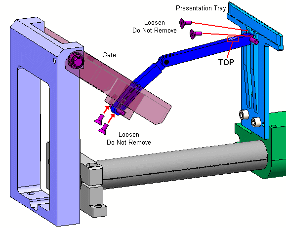
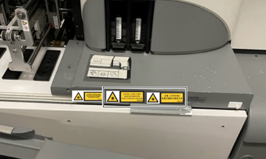
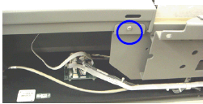

This procedure describes how to replace the gate linkage on the presentation tray.
Perform this procedure when the presentation tray on the sample presentation unit (SPU) is jamming and the root cause is found to be the gate linkage.

Prepare the instrument.
From the
Main Menu, select
Diagnostics > Device Diagnostics > Mechanics > Alignments. Select Motors >> Disable All.
Select
SPU Presentation Tray as the device and
Onload Position as the position.
Select
Home Device, then select
Move to X/Y Position.
Select
Motors > Disable All.
Open the upper left and right front covers.
Open the SPU.
The SPU is hinged on the left side. The right side is released and can be swung out from the instrument to approximately 45 degrees.
Open the upper left cover of the instrument.
Loosen the locking screw.
The locking screw prevents the SPU from swinging outward from the instrument. It is not necessary to remove the screw because the SPU plate is slotted.
Remove the 3/16-in hex bolt located near the right end of the SPU cover.
Open the lower right access panel on the front of the instrument.
Pull the spring-loaded captive pin that holds the panel (located under the SPU) to the frame.
Grasping the SPU near the right end, swing the right end away from the instrument.
Warning: The SPU off-load area slides forward and rearward as the SPU is swung in and out. To prevent damage to the SPU or the off-load area, confirm that nothing obstructs the movement of the off-load area as the SPU is moved.
(For China and Canada Only.) On the front facing the edge of the Framus assembly, install the Chinese and French labels adjacent to the existing English label.
Note: The labels are in the DxI Installation Kit.

Remove the covers to access the SPU presentation tray.
Remove the lower panel from the SPU.
Remove the eight screws securing the gray skin on the bottom of the SPU.
Remove the one screw securing the gray skin inside the SPU by the on-load pusher.

Note: DxI 600 has three additional screws to be removed.
Slide the skin off the instrument.
Note: A serial cable connects to the skin for the
STAT and
Routine buttons.
Remove the cable connection for the
STAT and
Routine buttons.
Replace the linkage gate.
Loosen the two screws securing the linkage gate to the presentation tray.
Slide the pin to the side and remove the end of the gate linkage.
Be careful not to lose the pin.
Lift the gate and loosen the two screws securing the other end.
Slide the pin to the side and remove the end of the gate linkage.
Be careful not to lose the pin.
Place the slotted end of the gate linkage into position and slide the pin into position.
Note: The other end of the gate linkage that reads TOP should be facing up.
Tighten the two screws securing the new gate linkage to the gate.
Place the end labeled TOP into position and slide the pin into position.
Tighten the two screws securing the new gate linkage to the presentation tray.
Replace the covers after accessing the SPU presentation tray.
Connect the ribbon cable for the
STAT and
Routine buttons.
Slide the skin on the instrument.
Replace the eight screws securing the gray skin on the bottom of the SPU.
Replace the one screw securing the gray skin inside the SPU.
Replace the lower panel from the SPU.
Close the SPU.
The SPU is hinged on the left side. The right side is released and can be swung out from the instrument to approximately 45 degrees.
Warning: The SPU off-load area slides forward and rearward as the SPU is swung in and out. To prevent damage to the SPU or the off-load area, confirm that nothing obstructs the movement of the off-load area as the SPU is moved.
Grasping the SPU near the right end, swing the right end toward the instrument.
Pull the spring-loaded captive pin to attach the panel (located under the SPU) to the frame.
Close the lower right access panel on the front of the instrument.
Insert the 3/16-in hex bolt.
Tighten the bolt that holds the SPU from swinging outward from the instrument (locking screw).
Close the upper left cover of the instrument.
Note: Initialize the instrument after opening and closing the SPU, because a switch is actuated when the SPU is opened.
Verify the operation of the instrument.
Close the upper left and right front covers.
From the
Alignments screen, select
Motors > Enable All.
Confirm the alignments of the presentation tray to all the intersecting devices.
Initialize the instrument.
Load 15 racks and verify the movement of the racks through the presentation tray. During this operation, select the
Routine Load button and load another ten racks to verify that the ribbon cable for the
STAT and
Routine buttons is functioning.
Perform QC and verify that customer specifications are met.